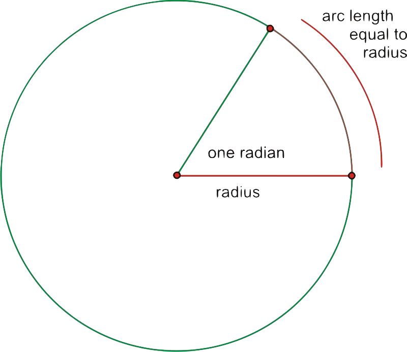
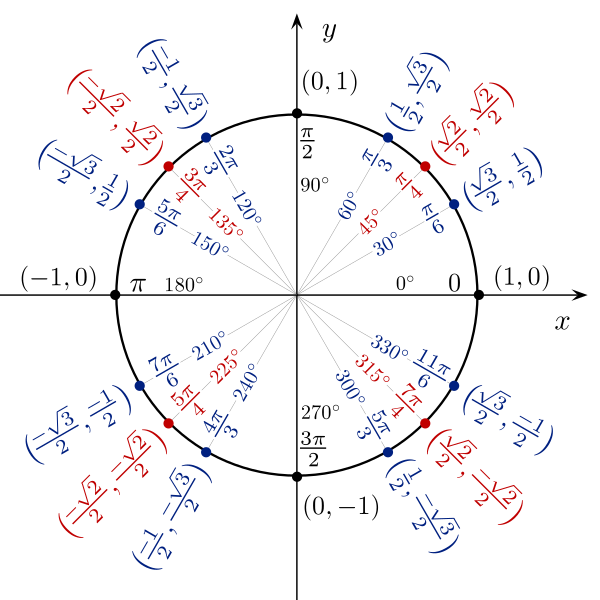
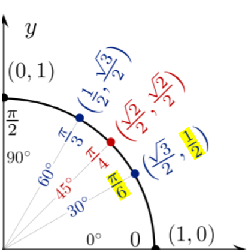

Introduction
-
What is a Radian:
A radian is a measure of an angle subtended at the centre of a circle by an arc equal in lengh to the radius of the circle.
One radian is equation to the arc lengh divided by the radius or ϴ = a/r

Converting
-
Radians to Degrees
When converting from radians to degrees 2π(radians) = 360°. This can be simplified to 1(radian) = 180°/π
-
Degrees to Radians
When converting from degrees to radians 360° = 2π(radians). This can be simplified to 1° = π/180°

Unit Circle
-
What is the Unit Circle
The unit cirlce is a circle with a radius of 1 centered at the origin (0,0). The unit circle helps determine the result of the sine, cosine and tangent functions.
 -
How to use the Unit Circle
To use the unit circle the three trig functions correspond to the coordinates.
sinϴ = y, cosϴ = x, tanϴ = x/y
-
Example
sin(π)/6 = 1/2
